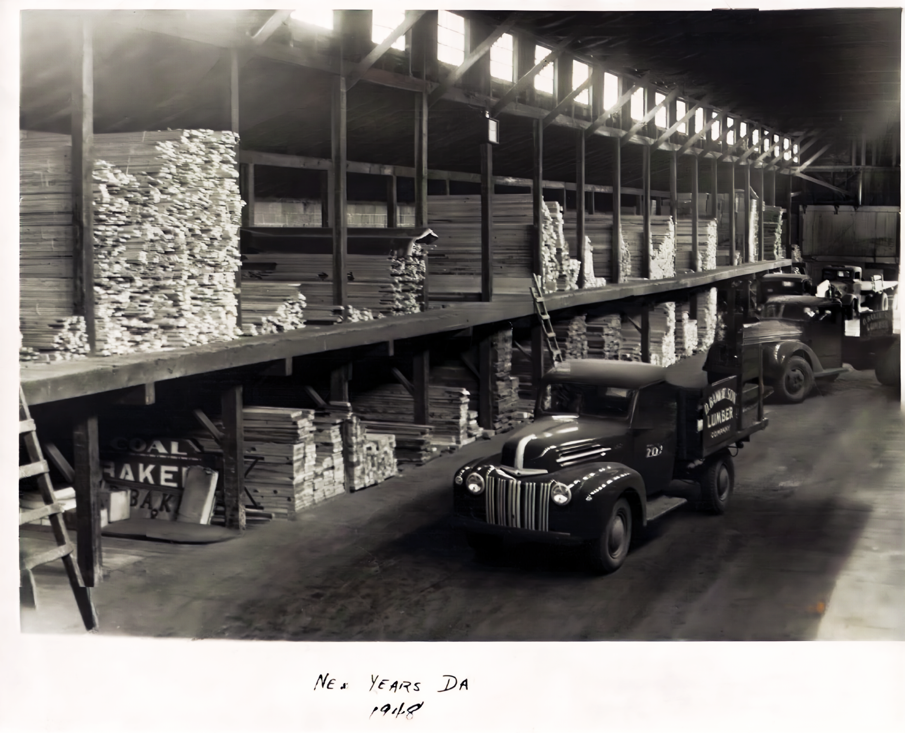
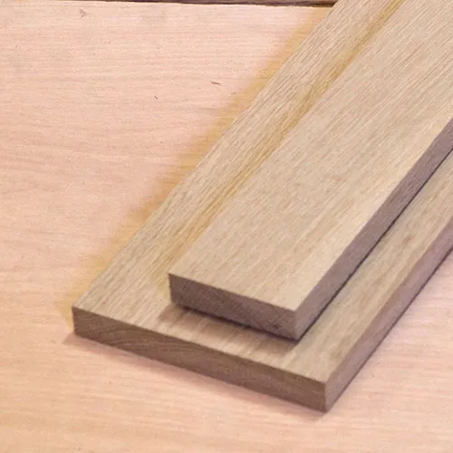
Oak lumber is a strong, durable hardwood prized for its attractive grain patterns and excellent workability. Known for its light to medium brown color with distinct rays and flecks, oak is often used in fine furniture, flooring, cabinetry, and millwork. It is available in two main types: red oak, which has a warm reddish tone and open grain, and white oak, which is denser, more moisture-resistant, and has a slightly golden hue. Oak’s hardness makes it resistant to wear and impact, while its natural tannins provide some protection against decay and insect damage. Because of its beauty and strength, oak lumber remains a timeless choice for both traditional and modern woodworking projects.
Buy Now
Walnut lumber is a premium hardwood valued for its rich, dark brown color and elegant grain patterns. Typically featuring deep chocolate tones with subtle purplish or gray undertones, walnut offers a smooth, fine texture that polishes beautifully. It is moderately dense yet easy to work with, making it ideal for high-end furniture, cabinetry, interior trim, gunstocks, and decorative veneers.
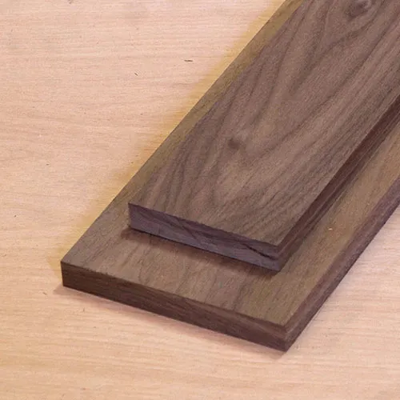
Walnut is dimensionally stable, resists warping, and carves well, allowing for intricate detailing and precision joinery. Over time, its color can lighten slightly, developing a warm patina that enhances its natural beauty. Renowned for its luxurious appearance and excellent workability, walnut lumber is a favorite among woodworkers and designers seeking both strength and sophistication.
Buy Now
Adams Lumber traces its roots back to 1911, when a young entrepreneur named Walter Adams opened a small shop on Main Street under the name *Pacific Supply Co.*. At the time, the business was little more than a modest storefront offering nails, timber, and basic tools to the growing logging and construction communities in the Pacific Northwest. Walter, a former mill worker, saw an opportunity to provide reliable building materials to local tradesmen who were fueling the rapid development of the region. His commitment to fair prices, quality lumber, and personal service quickly set the store apart from larger, impersonal suppliers of the era.Through the 1930s and 1940s, Pacific Supply Co. expanded its product line and became a trusted fixture in the community, surviving the Great Depression and supporting local building efforts during wartime shortages. In 1958, Walter’s son, Harold Adams, officially took over the business and changed its name to *Adams Lumber* to reflect the family’s deepening connection to the community. Under Harold’s leadership, the store grew from a single storefront into a full-service hardware and lumber yard, introducing modern equipment, delivery services, and a dedicated team of long-time employees who became familiar faces to generations of customers.Today, Adams Lumber is run by the third generation of the Adams family, who have blended tradition with modern practices to keep the business thriving. The original storefront still stands as part of a larger facility that now includes specialized departments for tools, home improvement, and sustainable building materials. Though the products have evolved over time, the company’s core values—honest service, quality materials, and community support—remain unchanged. More than a century after its founding, Adams Lumber continues to serve as both a neighborhood hardware store and a living piece of local history.
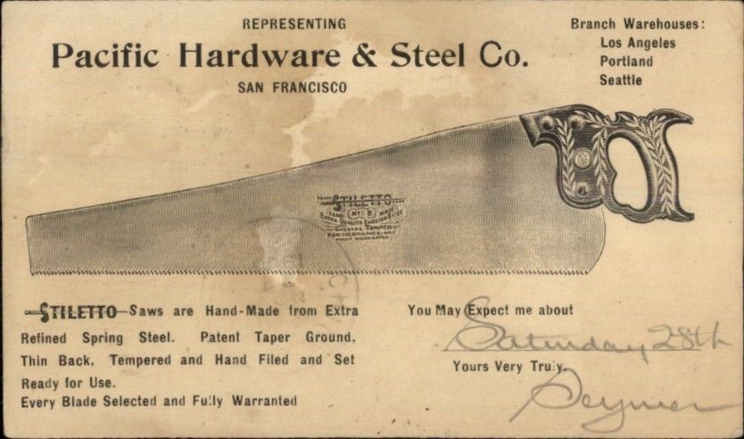
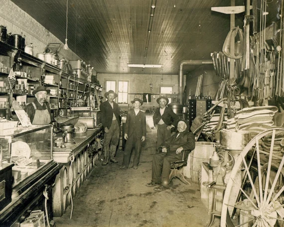
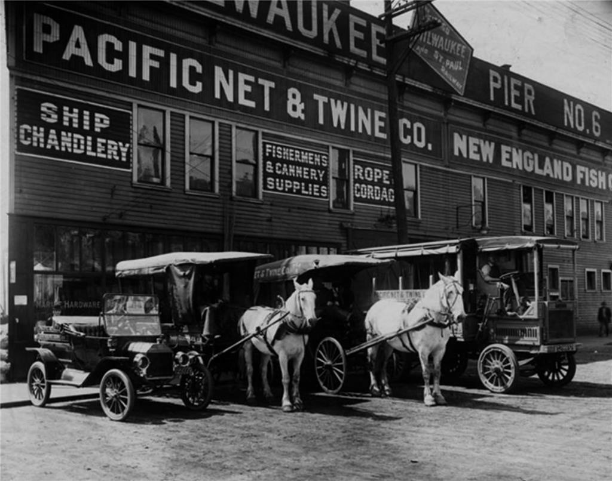
| Oak | Maple | Birch | Walnut | |
|---|---|---|---|---|
| 2"x4" | $2 | $5 | $1 | $2 |
| 3/4"x6 | $5 | $8 | $4 | $5 |
| 1/2"x10" | $10 | $15 | $8 | $10 |
| 1"x12" | $15 | $20 | $12 | $15 |
| Nominal Size (inches) | Actual Size (millimeters) | Actual Size (inches) |
|---|---|---|
| 1 x 4 | 3/4 x 3 1/2 | 19 x 89 |
| 1x2 | 3/4 x 1 1/2 | 19 x 38 |
| 1 x 6 | 3/4 x 5 1/2 | 19 x 140 |
| 1x3 | 3/4 x 2 1/2 | 19 x 64 |
The miter formula depends on whether you are cutting two boards of the same width or different widths. For two equal-width boards, simply divide the joint angle by two (e.g., for a corner, the miter angle is ). For different-width boards, a more complex trigonometric formula is needed, such as: Miter Angle .
Cutting miters starts with accurately measuring and marking your workpiece so the angled joint aligns cleanly. Set your miter saw or miter box to the desired angle—commonly 45 degrees for frames—and ensure the blade is sharp for a smooth cut. Hold the material firmly against the fence to prevent movement, then make the cut in a steady, controlled motion. After cutting both mating pieces, dry-fit them to check the joint; small adjustments with a sanding block or a shooting board can help achieve a tight, seamless corner. Using consistent technique and careful setup ensures crisp, professional-looking miters.
A board foot is a unit of measurement for the volume of lumber, equivalent to a piece that is 1 foot long, 1 foot wide, and 1 inch thick.. It is commonly used by sawmills and lumber suppliers to price and sell wood. To calculate the number of board feet for a piece of lumber, you can multiply its thickness by its width by its length and divide by 144 or width x length x thickness / 12 = board feet
Board feet are a standard unit of measurement used in woodworking and lumber sales to describe the volume of a piece of wood. board footage ensures accurate planning, budgeting, and efficient use of materials
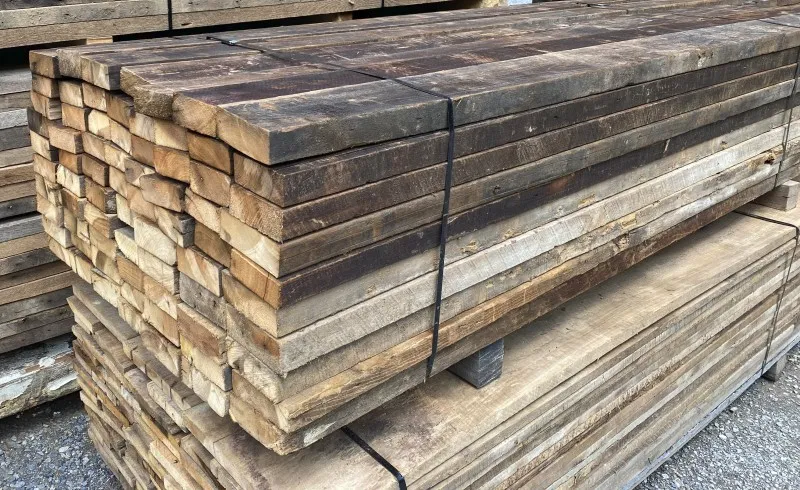
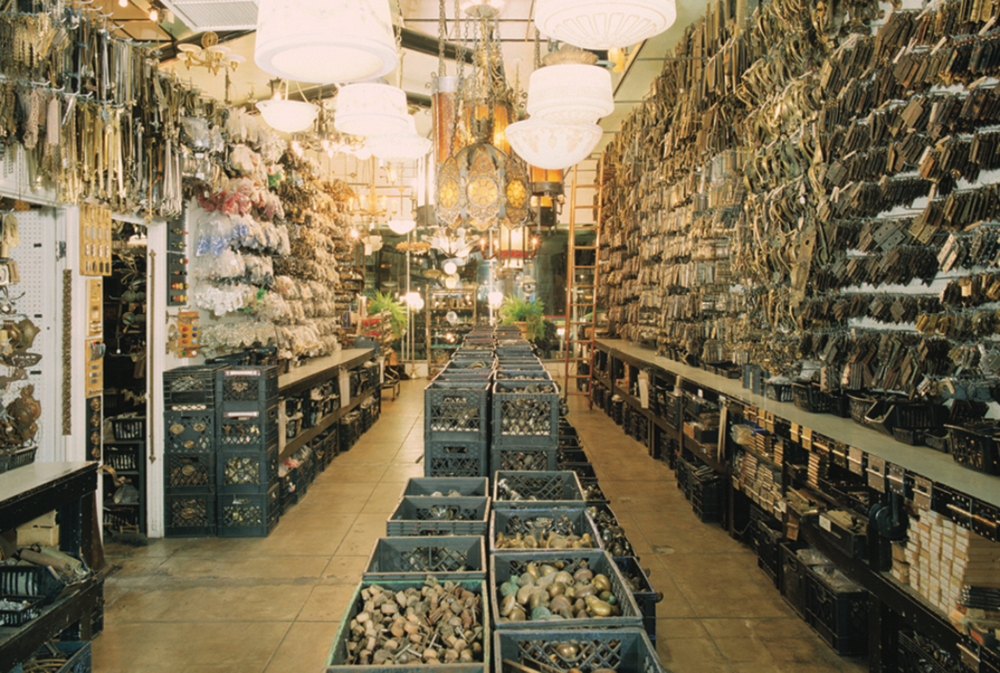
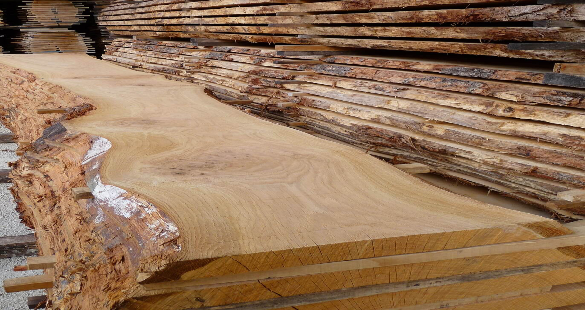
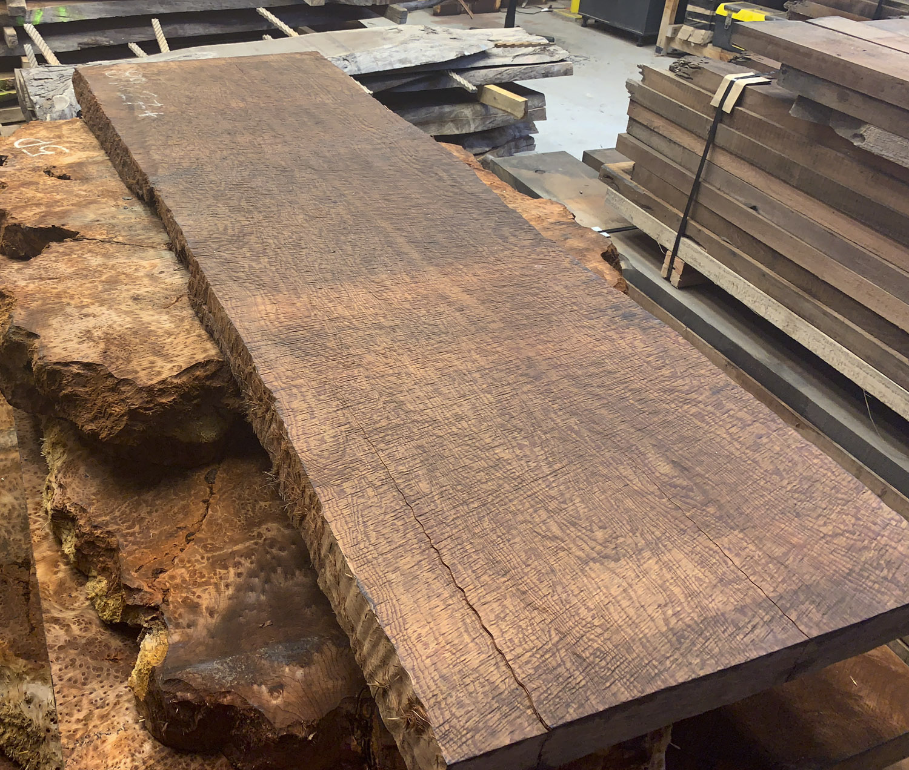
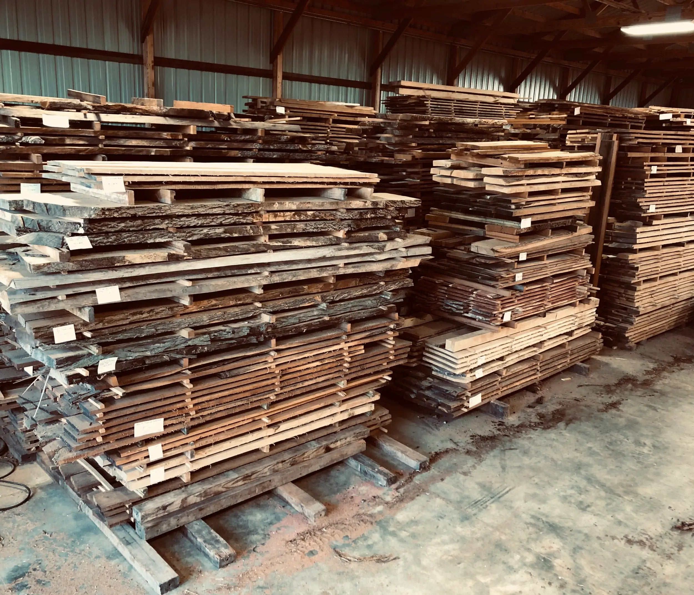